Ein eyðimörk, mörg blek
Allir bjórar línunnar bera sömu teiknuðu eyðimörkina. Hver bjór fær sitt blek, sama landið, sami riddarinn, sami ormurinn í sandinum.
Árstíðabundið
Fimm bjórar sem koma og fara með árinu. Sama eyðimörkin, nýtt blek í hvert sinn.
Kolsýrt íslenskt bergvatn
Nýtt og frískandi kolsýrt bergvatn beint úr náttúru Íslands, þar sem hreinleiki og ferskleiki mætast í einni dós.
- ÓmbragðbættKolsýrt íslenskt bergvatn
- LimeKolsýrt íslenskt bergvatn og náttúruleg lime bragðefni
Vatnið fæst einnig sérmerkt, alveg eins og bjórinn.
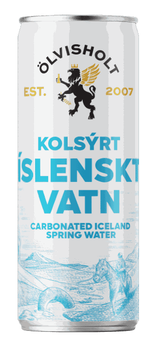
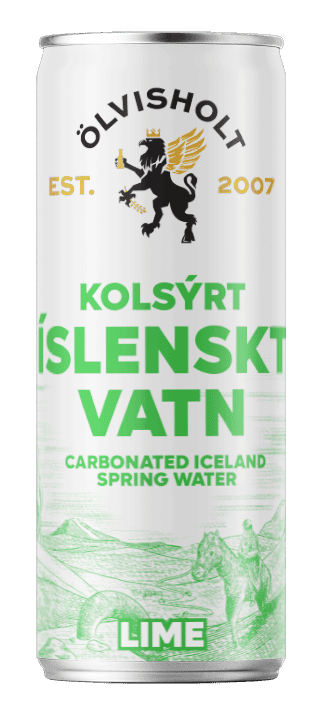
Bruggmeistari með meistaragráðu frá Heriot-Watt. Valgeir bruggaði fyrstu lögun Ölvisholts 2007 og stýrir henni aftur í dag.
Á milli lá leiðin um Borg Brugghús, Ölgerðina og RVK Bruggfélag. Bjórana okkar færðu á betri börum landsins og í Vínbúðinni. Innnes sér um sölu og dreifingu á íslenskum markaði.
Fréttir
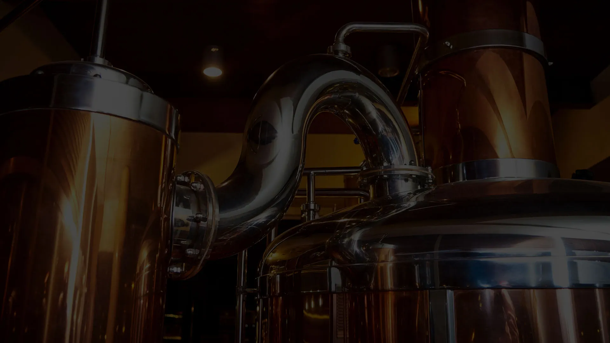
Byrjaði í gamalli hlöðu
Ölvisholt var stofnað 2007 af tveimur nágrannabændum með ástríðu fyrir bjór. Gamalli hlöðu var breytt til að hýsa litla brugghúsið, og þaðan fór af stað örbrugghúsabylgjan sem einkennir Ísland í dag. Framleiðslan er núna á Grandatröð 4 í Hafnarfirði.
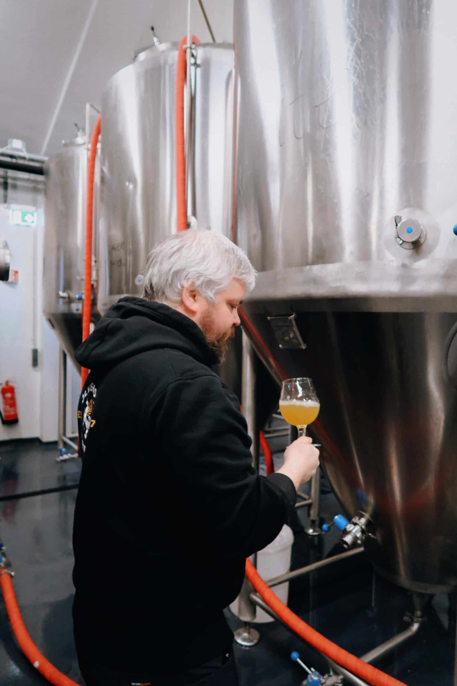
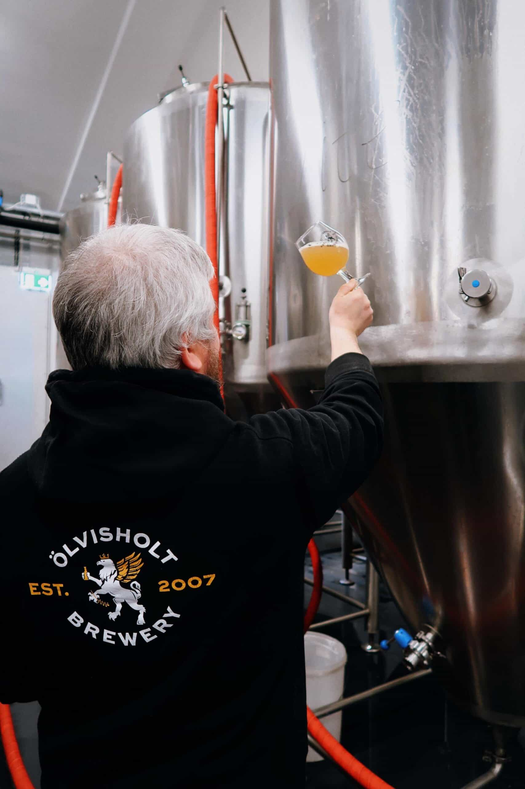
Öll línan
Þitt merki. Okkar bjór.
Fyrirtæki, viðburðahaldarar og einstaklingar geta sérmerkt dósir eða flöskur fyrir hvaða tilefni sem er. Stansar eru í boði.
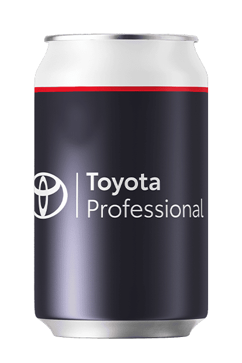
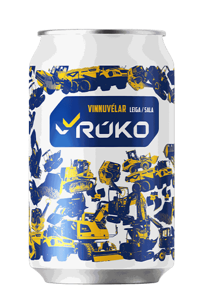
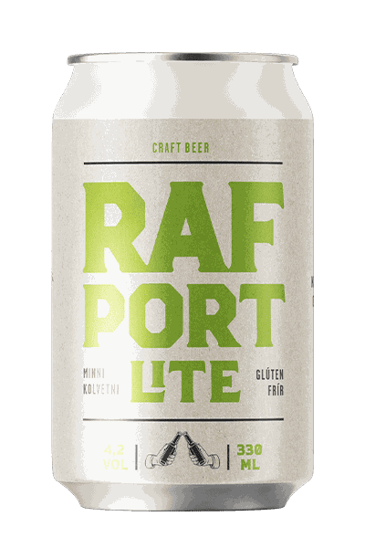
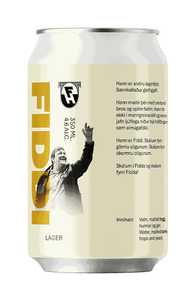
Bruggstofan
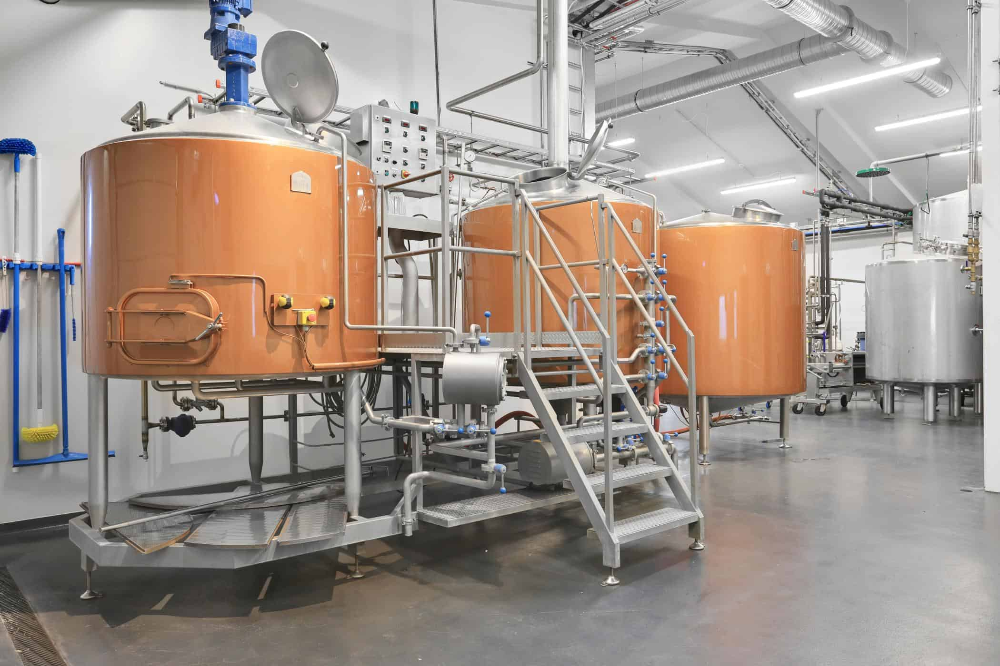
- Bjórtúr, kynning í framleiðslunni um 20 mín2 klst alls
- Bjórkort4 bjórar innifaldir
- Smakk beint úr gerjunartönkuminnifalið
- Aðgengi að veislusal, sviði, mixer, míkrafón og skjávarpainnifalið
- Lágmarksfjöldi15 manns
- Eigin pinnamatur leyfðurvægt gjald fyrir matarstell
- Bjórinn fæst líka í flöskum og á kranaí salnum
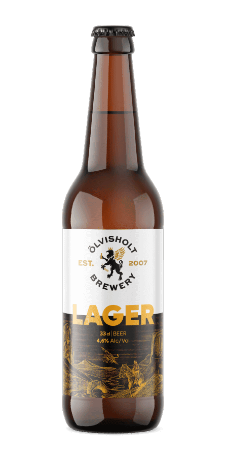
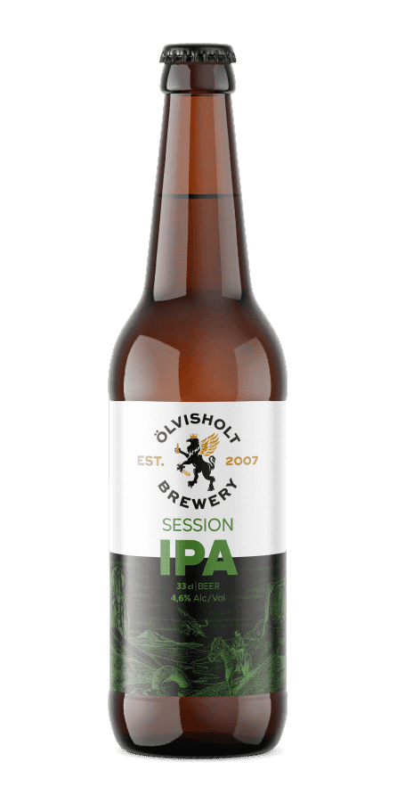
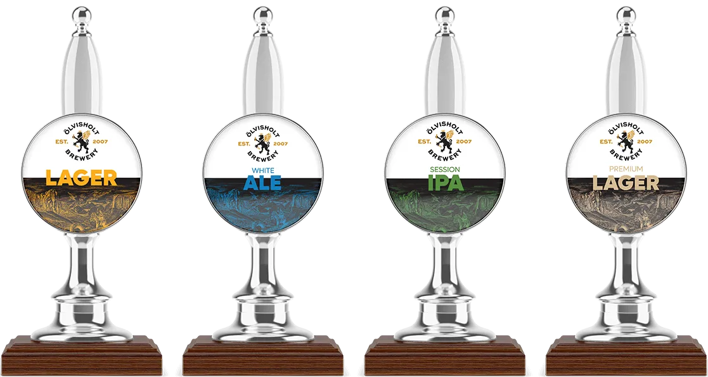
Veislusalur til leigu
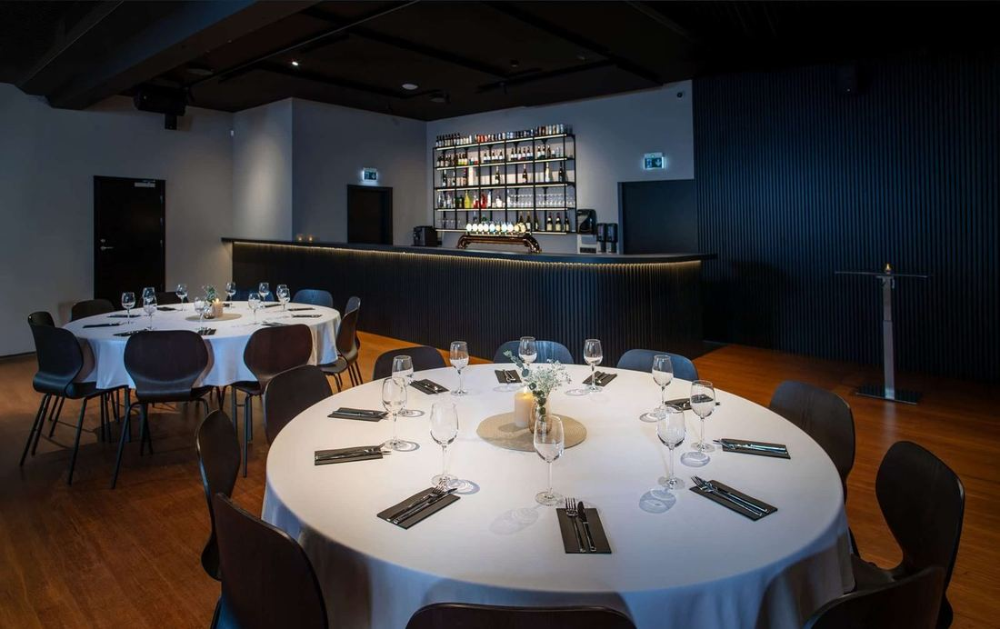
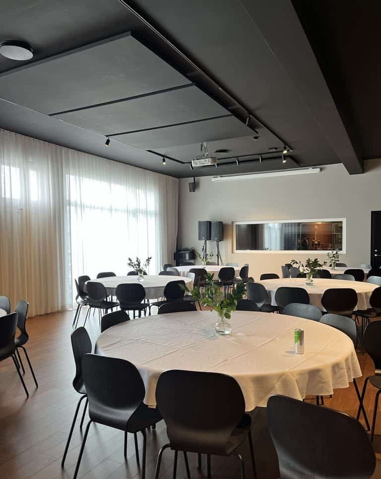
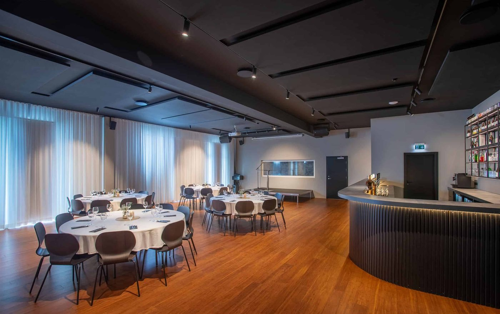
- Heil kvöldstund eða skemur130.000 kr
- Starfsleyfi á saltil kl. 01:00
- Starfsmaður, einn á hverja 30 gesti7.500 kr á klst m/vsk
- Svið, mixer, míkrafónn, tvöfalt hljóðkerfi og skjávarpiinnifalið
- Sitjandi á hringborðum fyrir 10allt að 100 manns
- Blönduð uppstilling, sitjandi og standandiallt að 150 manns
- Dúkar á hringborð3.500 kr stk
- Undirbúningur og skreyting á sal1 klst innifalin
- Þrif eftir veislunainnifalið